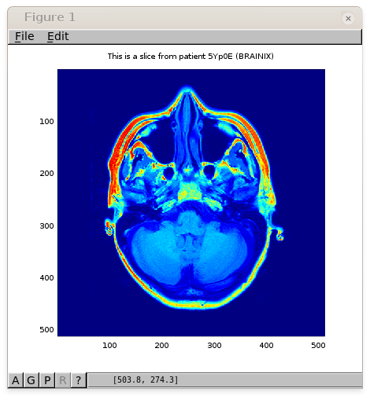

Thanks to the REST API of Orthanc, it is easy to access DICOM images from Matlab or Octave, as depicted in the following sample image:
Both Matlab and Octave have access to HTTP servers thanks to their built-in urlread() function. Once must simply install a Matlab/Octave library to decode JSON files. The JSONLab toolkit works perfectly to this end.
Using JSONlab, the following code will download and display a DICOM image:
SERIES = 'ae164c84-e5bd0366-ba937a6d-65414092-f294d6b6';
URL = 'http://demo.orthanc-server.com/';
# Get information about the instances in this DICOM series
instances = loadjson(urlread([ URL '/series/' SERIES '/instances' ]));
# Select one slice from the series
instance = instances{1}.ID
# Decode the slice with Orthanc thanks to the "/matlab" URI
slice = eval(urlread([ URL '/instances/' instance '/matlab' ]));
# Compute the maximum value in this slice
max(max(slice))
# Display the slice
imagesc(slice)
# Annotate the graph with the patient name and ID
tags = loadjson(urlread([ URL '/instances/' instance '/tags?simplify' ]));
title([ 'This is a slice from patient ' tags.PatientID ' (' tags.PatientName ')' ])
Here is another sample Matlab/Octave script explaining how to download the raw DICOM file corresponding to one given instance stored in Orthanc, then decode this DICOM file using Matlab/Octave:
SERIES = 'ae164c84-e5bd0366-ba937a6d-65414092-f294d6b6';
URL = 'http://demo.orthanc-server.com/';
# Get information about the instances in this DICOM series
instances = loadjson(urlread([ URL '/series/' SERIES '/instances' ]));
# Select one slice from the series
instance = instances{1}.ID
# Download the raw DICOM file and store it as a file named "instance.dcm"
urlwrite([ URL '/instances/' instance '/file' ], 'instance.dcm');
if exist('OCTAVE_VERSION', 'builtin') ~= 0
# If running Octave instead of Matlab, load the "dicom" package from Octave Forge
pkg load image
pkg load dicom
endif
# Decode the downloaded DICOM file
im = dicomread('instance.dcm');
imagesc(im)
Note: If running Octave, you will have to manually install the
dicom package from Octave Forge. Download the
source code of the package, make sure the libgdcm2-dev and
octave-image packages are installed (for Ubuntu 16.04), then type
the following command to install the dicom package:
$ octave --no-gui --eval "pkg install ./dicom-0.2.0.tar.gz"
{kind=link}